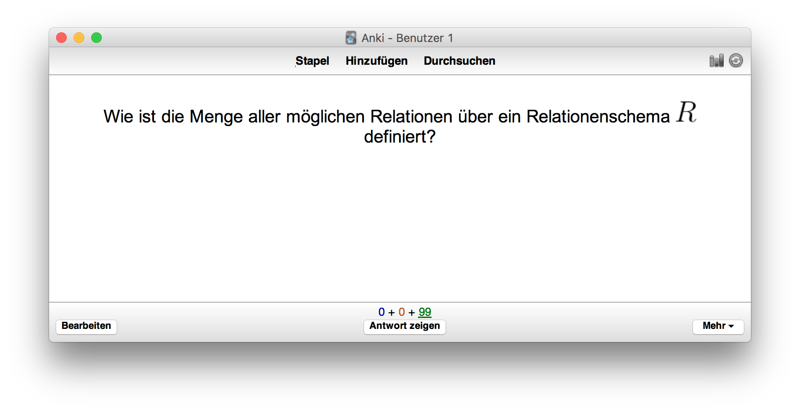
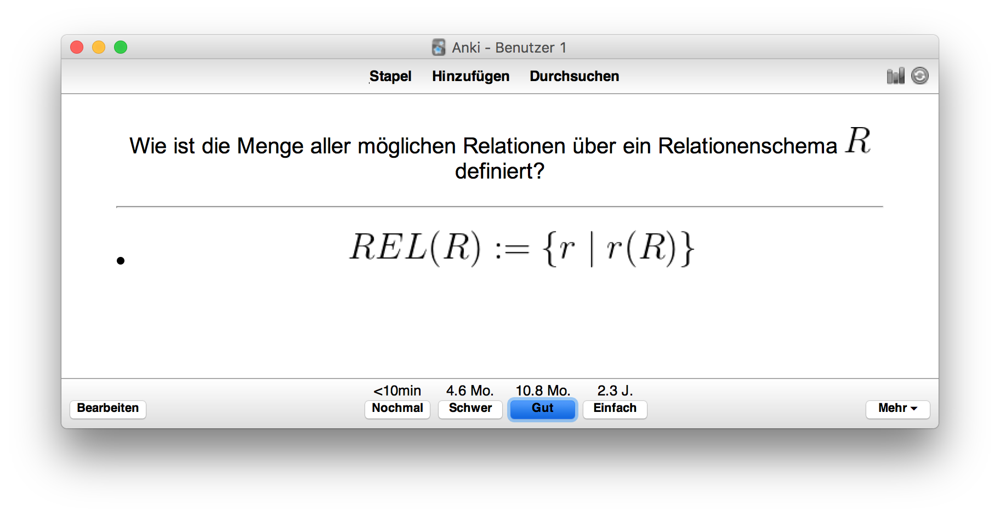
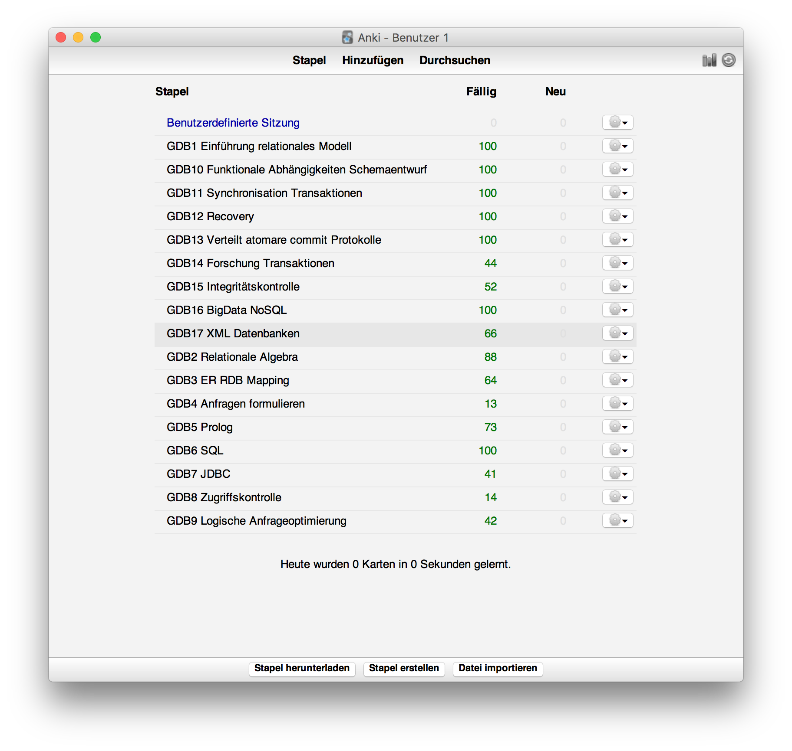
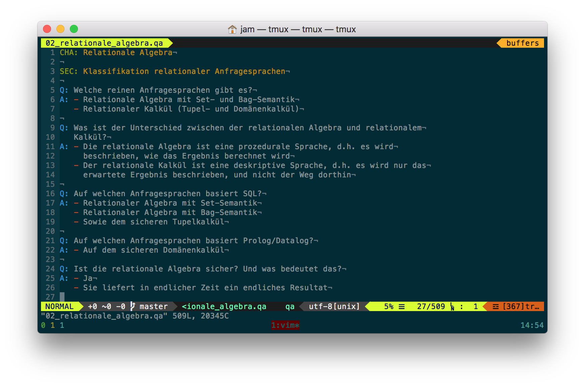
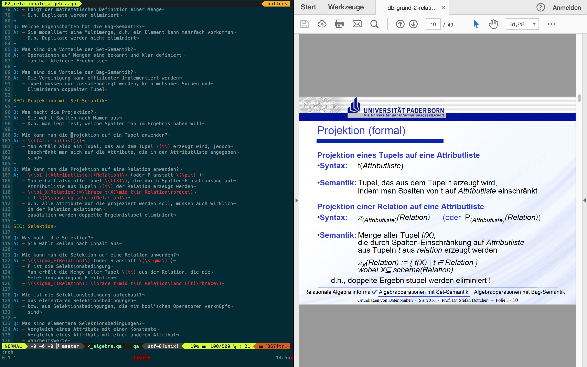
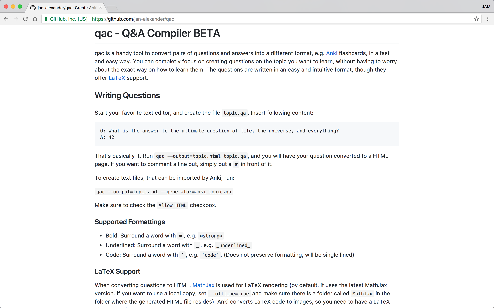

QAC
Question and Answer Compiler






Features
Textformatierungen
Kapitel, Unterkapitel, ...
Listen
Tabellen
Bilder
LaTeX-Formeln
Organisieren in mehrere Dateien
Mehrere Backends: Anki, HTML, ... (your own)
Danke!
https://github.com/jan-alexander/qac